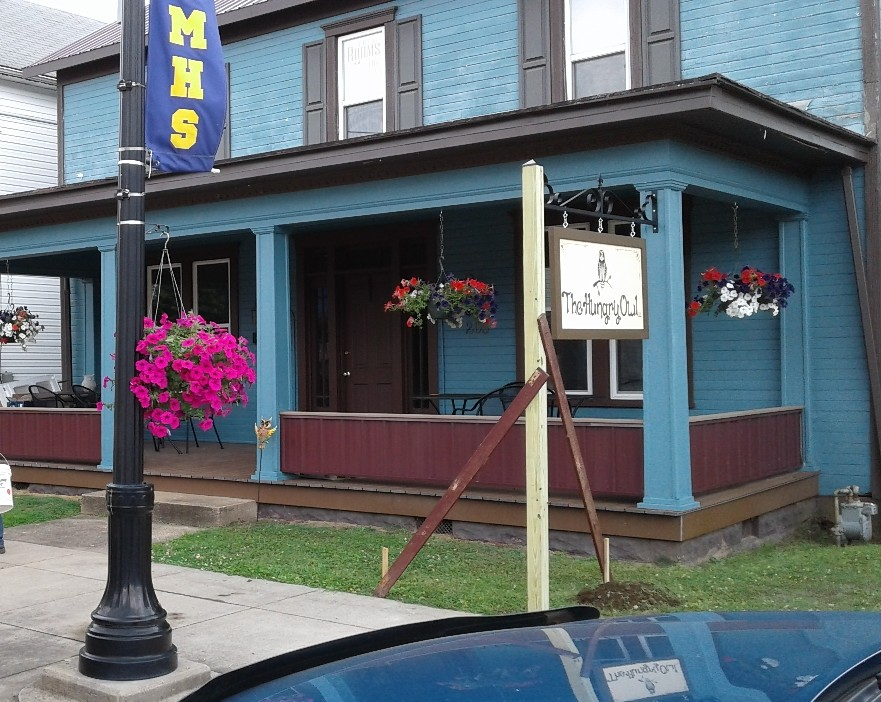

About Us
The Hungry Owl was first opened in beautiful downtown St. Marys, West Virginia in 2017. It was founded and is currently operated by Cynthia Maze
Our Staff
Cynthia

The creator of all of our delicious entrees. Cynthia has always had a passion and talent for cooking, and dreamed of running her own business. That dream finally came true with the creation of The Hungry Owl.
Jane Doe

Jane has worked as our delivery girl since 2018. She is originally from St. Marys and loves our close-knit community. Her favorite Hungry Owl recipe is enchillada casserole!